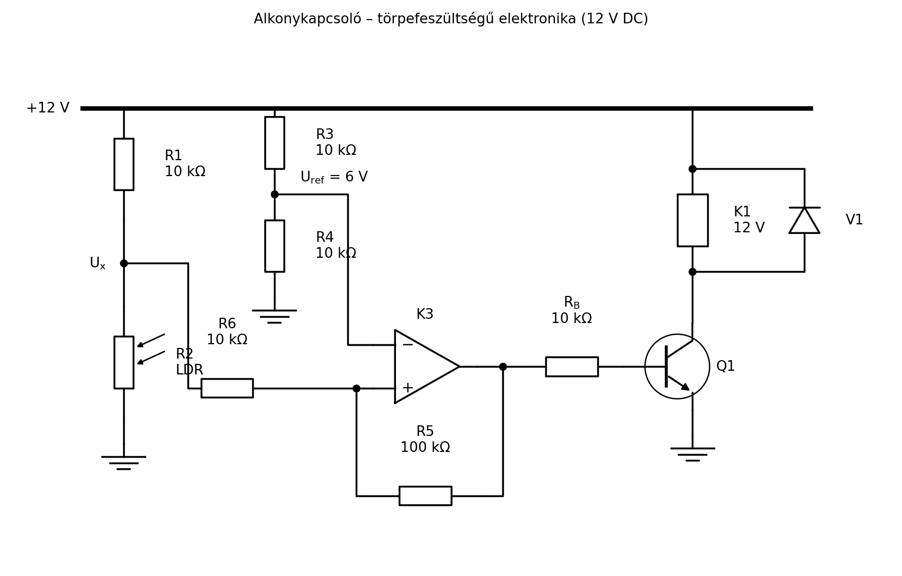
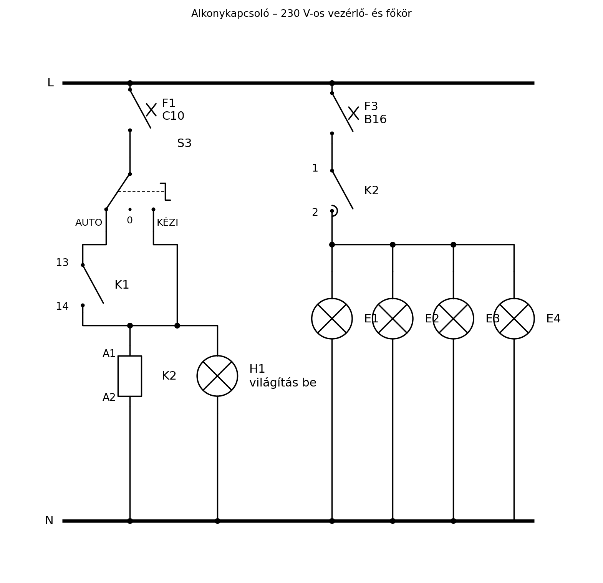

A kapcsolódó elmélet: tankönyv, 37.3 alfejezet.
Számítás. NTC feszültségosztó kimenő feszültségének meghatározása.
Adott egy NTC termisztor, amelynek ellenállása 25 °C-on 10 kΩ, a fix ellenállás pedig 10 kΩ. A tápfeszültség 5 V. Keresett az osztó kimenő feszültsége 25 °C-on és 50 °C-on, ha az NTC ellenállása 50 °C-on 4 kΩ.
25 °C-on:
50 °C-on:
Ellenőrzés. A kimenő feszültség a hőmérséklet növekedésével csökkent, ami NTC-nél helyes, mert az NTC ellenállása csökken. A kapott feszültség soha nem haladja meg az 5 V-ot, és sosem éri el a 0 V-ot, tehát a vezérlő analóg bemenetére biztonságosan köthető.
Számítás. LDR-es alkonyosztó kimenő feszültsége.
Adott egy LDR, amely nappali erős fénynél 1 kΩ, sötétben pedig 100 kΩ ellenállású. A feszültségosztóban az LDR az alsó tag, a felső fix ellenállás 10 kΩ, a tápfeszültség 12 V. Keresett a kimenő feszültség nappal és sötétben.
Nappal:
Sötétben:
Értelmezés. Ha egy PLC analóg bemenetét 0–10 V tartományra méretezték, ez a kapcsolás nem megfelelő, mert sötétben 10,9 V, ami túlvezérelné a bemenetet. Vagy 0–20 mA-es távadót, vagy más ellenállásarányt, vagy feszültségkorlátozást kellene választani. Ez a példa jól mutatja, hogy a szerelőnek mindig ismernie kell a fogadó bemenet engedélyezett tartományát.
Az osztóképletet és a visszaszámolást az alábbi feladatgenerátorral gyakorolhatod. A HTML-kiadásban négy szinten kapsz új feladatot (A: osztó kimenete; B: NTC a B-paraméterrel és Pt100; C: mért feszültségből ellenállás és hőmérséklet; D: túlvezérli-e a sötét LDR a PLC-bemenetet, és mekkora fix ellenállás kell), a lap ellenőrzi a beírt eredményt, felismeri a tipikus hibákat (felcserélt felső–alsó tag, °C a kelvin helyett, log₁₀ az ln helyett), és lépésenként megmutatja a megoldást.
Az alábbi rögzített feladatsor első két feladata a fenti kidolgozott példát és a 6. feladatot ismétli B = 3500 K-nel: 50 °C-on az NTC ellenállása 4,03 kΩ, a kimenet 1,44 V (a fejezet 4 kΩ-os kerekítése ezzel egyezik); a 2,3 V-os mért értékből 8,52 kΩ és kb. 29,1 °C adódik – a 6. feladat két pontból számolt B ≈ 4570 K-jével 28 °C jön ki. A B-érték tehát érezhetően befolyásolja a becsült hőmérsékletet: mindig a beépített NTC adatlapja szerinti értékkel számolj.
Rögzített feladatsor. A HTML-kiadás gyakorlója végtelen sok hasonló feladatot ad; az alábbi sor rögzített, a megoldókulcs a végén található.
Megoldókulcs.
| Feladat | Szint | Eredmény |
|---|---|---|
| 1. | B | RNTC = 4,03 kΩ; Uki = 1,44 V |
| 2. | C | RNTC = 8,52 kΩ; ϑ = 29,1 °C |
| 3. | A | Uki = 7,67 V |
| 4. | A | Uki = 1,09 V |
| 5. | B | RPt100 = 119,2 Ω; U = 119,2 mV |
| 6. | C | RNTC = 7,67 kΩ; ϑ = 14,4 °C |
| 7. | D | Usötét = 10,9 V; Túlvezérli? = igen; Rfix,min = 20 kΩ |
| 8. | D | Usötét = 22,9 V; Túlvezérli? = igen; Rfix,min = 658 kΩ |
Kidolgozott megoldások.
Cél: NTC hőmérséklet-érzékelő feszültségosztóval történő bekötése, mérése és ellenőrzése.
Eszközök és anyagok: - NTC termisztor (pl. 10 kΩ, 25 °C) - 10 kΩ fémréteg fix ellenállás - 5 V stabilizált tápegység - multiméter, breadboard, PLC vagy mikrokontroller analóg bemenet - hőmérő, hőforrás (pl. kézmelegítő, kontrolláltan felmelegített víz)
Biztonsági korlát. A feladat tanműhelyi, törpefeszültségű környezetre vonatkozik. A gyakorlatban azonban varisztoros, 230 V-os túlfeszültség-védelmet hálózati feszültségű munkavégzés keretében, feszültségmentesített állapotban kell beszerelni és bekötni; hálózati feszültségen önállóan ne végezz.
Az öt biztonsági szabály alkalmazása (230 V-os szerelésnél): 1. Hálózat lekapcsolása. 2. Visszakapcsolás elleni biztosítás. 3. Feszültségmentesség ellenőrzése a munkahelyen, minden pólus között (L–N, L–PE, N–PE), kétpólusú feszültségvizsgálóval (nem fázisceruzával, nem beépített kijelzővel), amelyet használat előtt és után ismert feszültségen kipróbálsz. 4. Földelés és rövidre zárás, ha szükséges. 5. Szomszédos, feszültség alatt álló részek lefedése.
Számozott lépések: 1. Építsd meg a fenti kapcsolási rajz szerinti feszültségosztót. 2. Helyezd el az NTC-t a mérendő közegben (pl. víz), és tedd mellé a referencia hőmérőt. 3. Kapcsold rá az 5 V-ot. 4. Mérd meg a kimenő feszültséget voltmérővel, miközben a hőmérsékletet fokozatosan változtatod. 5. Számítsd vissza az NTC ellenállását a mért feszültségből:
Ellenőrzési pontok: 25 °C-on (ha 10 kΩ-os NTC és 10 kΩ fix ellenállás van) a kimenet 2,5 V legyen. Melegítéskor a feszültség csökkenjen.
Tipikus hibák: - Az NTC-t és a fix ellenállást felcserélik; a kimeneti feszültség jellege megfordul. - Elfelejtik a fix ellenállást, és az NTC-t közvetlenül a tápegységre kötik: a kapcsain mindig a teljes tápfeszültség mérhető, a jel nem függ a hőmérséklettől (nincs osztó), és a megnőtt áram az NTC-t önmelegíti, ami a mérést is meghamisítja. - Hosszú vezetéken 2-vezetékes Pt100-at használnak: a vezeték ellenállása megemelkedik, és téves hőmérsékletet mérnek.
Az alkonykapcsoló jól mutatja, hogyan lesz egy ellenállás-változásból egy 230 V-os világítási kör kapcsolása. A lánc: LDR-osztó → hiszterézises komparátor → tranzisztor → relé → mágneskapcsoló → kültéri világítás. Az első rajz a 12 V-os elektronikát mutatja; keresd meg rajta, hol keletkezik , és honnan kapja a komparátor a hiszterézist.

Számítás. Kapcsolási pontok (a komparátor kimenete ideálisan 0 V és 12 V között billen). A (+) bemenet feszültsége R5 és R6 osztásából:
Az osztóból : bekapcsol, ha , kikapcsol, ha . (Egyszerűsítés: az R1–LDR osztó kb. 5 kΩ-os belső ellenállását R6 mellett elhanyagoltuk; a valós kapcsolási pontok ettől kissé eltolódnak.) Az 1,2 V-os hiszterézis miatt a két megvilágítási szint jól elválik, a mágneskapcsoló alkonyatkor nem ráng.
Számítás. Bázisellenállás: a relé árama (12 V, 400 Ω), , háromszoros biztonsággal , → a kisebb szabványos érték 10 kΩ, amellyel .
A K1 relé érintkezője már a 230 V-os oldalon dolgozik. A második rajzon kövesd, mi történik a S3 választókapcsoló három állásában.

| Lépés | Mi történik |
|---|---|
| Este sötétedik | az LDR ellenállása nő → nő |
| () | a komparátor kimenete 12 V-ra billen → Q1 vezet → K1 meghúz |
| S3 AUTO állásban | K1 13–14 zár → K2 tekercse feszültséget kap → K2 1–2 zár → E1…E4 és H1 világít |
| Reggel világosodik | az LDR ellenállása csökken → csökken |
| () | a kimenet 0 V → Q1 lezár → K1 elenged (V1 levezeti a tekercs energiáját) → K2 elenged → a lámpák kialszanak |
| S3 KÉZI / 0 | KÉZI: K2 az érzékelőtől függetlenül behúz; 0: a világítás ki |
Hibalehetőség. Ha az LDR a bekapcsolt lámpák fényét is látja, a világítás bekapcsol, az LDR „világosságot” lát, kikapcsol – és így tovább: villog. Az érzékelőt a lámpák fényétől takartan, észak felé kell elhelyezni (lásd Érzékelők: fény, mozgás, jelenlét, hőmérséklet (tankönyv, 20.1)).
Miért relé és mágneskapcsoló? A relé galvanikusan leválasztja a 12 V-os elektronikát a 230 V-os körtől, a mágneskapcsoló pedig a négy lámpatest áramát és gyakori kapcsolását bírja; a kis jelszintű tranzisztor közvetlenül nem kapcsolhat 230 V-ot. A tranzisztoros relémeghajtásról a Tranzisztorok és kapcsoló üzem (tankönyv, 37.2), a hiszterézises komparátorról az Erősítők, műveleti erősítő és szűrők (tankönyv, 38.2) alfejezet szól.
1. Igaz-e, hogy a Pt100 ellenállása 100 °C-on kisebb, mint 0 °C-on? Indokold!
2. Miért szükséges feszültségosztó egy NTC és egy PLC analóg bemenete közé?
3. Egy varisztor egy 230 V-os hálózati áramkörben párhuzamosan van kötve a fogyasztóval. Legalább mekkora legyen a varisztor megengedett feszültsége?
4. Mi a különbség az LDR és a fototranzisztor között?
5. Miért veszélyes túl alacsony feszültségű varisztort építeni hálózati körbe?
1. feladat (A). Írd le, mi a különbség az NTC és a PTC hőmérséklet-ellenállás jelleggörbéje között.
2. feladat (A). Nevezz meg két alkalmazást, ahol NTC-t használnak, és két alkalmazást, ahol PTC-t.
3. feladat (B). Egy NTC ellenállása 25 °C-on 47 kΩ, a fix ellenállás 100 kΩ, a tápfeszültség 24 V. Számold ki a kimenő feszültséget 25 °C-on, majd 80 °C-on, ha az NTC ellenállása 80 °C-on 5 kΩ.
4. feladat (B). Egy LDR-es alkonykapcsolóban a fix felső ellenállás 22 kΩ, a tápfeszültség 5 V. Az LDR alsó ellenállása nappal 2 kΩ, sötétben 500 kΩ. Mekkora a kimenő feszültség nappal és sötétben? Értelmezd a két értéket.
5. feladat (C). Egy ipari hűtőszekrényben Pt100 érzékelőt kétvezetékesen, mérőárammal táplálunk; -on , -on jelenik meg. A PLC analóg bemenete . Miért nem köthető közvetlenül? Mit javasolsz?
6. feladat (D). Egy laborban megmérsz egy feszültségosztót: NTC alsó ellenállás, 10 kΩ fix felső, 5 V táp. Mért feszültség 2,3 V. Számítsd ki az NTC pillanatnyi ellenállását, és becsüld meg a hőmérsékletet, ha tudod, hogy az NTC 25 °C-on 10 kΩ és 60 °C-on 2 kΩ. Ellenőrizd a számítást, és írd le, hogyan ellenőriznéd a gyakorlatban.
7. feladat (B). Rajzold meg egy PNP és egy NPN kimenetű háromvezetékes érzékelő bekötését egy-egy, a típusnak megfelelő közös pontú PLC-bemenetre (érszínekkel: BN, BU, BK; a bemenet kapcsai DI és 1M)!
8. feladat (D). Egy PNP, záró kimenetű induktív érzékelőn ezt méred: BN–BU 23,8 V; BK–BU tárgy előtt 0,2 V, tárgy nélkül 0,2 V; a PLC nem jelez. Mi a hiba, és hogyan ellenőrzöd?
9. feladat (B). Egy Pt100-at kétvezetékesen, 2 × 50 m hosszú, 0,75 mm² keresztmetszetű rézvezetékkel kötöttek be. Mekkora a vezetékellenállás és a hőmérséklet-hiba? Mit javasolsz?
10. feladat (D). A PLC egy 5 V-os, 10 kΩ / 10 kΩ névleges NTC-osztóból (NTC alul) 4,98 V-ot olvas. Mi a hiba, és mit mérsz?
Önellenőrzés – válaszok: 1. Hamis: a fémek ellenállása hővel nő, tehát a Pt100 a 0 °C-os 100 Ω-ról növekszik; 100 °C-on jellemzően 138,5 Ω körül van. 2. A PLC analóg bemenete feszültséget mér, nem ellenállást; a feszültségosztó az érzékelő ellenállását feszültséggé alakítja. 3. (effektív) , jellemzően AC; az -es egyenáramú varisztorfeszültség a kb. -os csúcsérték fölött, jellemzően (ellenőrizendő: gyártói adatlap). 4. LDR folytonos, lassú; fototranzisztor gyors, logikai. 5. Mert a varisztor a normál hálózati feszültségen is vezetni kezd, tartós áramot vesz fel, felmelegszik, és végül tönkremegy vagy tüzet okozhat.
1. feladat megoldása. Az NTC ellenállása a hőmérséklet növekedésével csökken; a PTC ellenállása egy küszöbhőmérsékletig alig változik, majd hirtelen meredeken megnő.
2. feladat megoldása. NTC: hőmérsékletmérés; bekapcsolási áramlökések korlátozása tápegységekben vagy frekvenciaváltókban. PTC: motorvédelmi leoldás; önregeneráló túláram-biztosíték.
3. feladat megoldása.
25 °C-on:
80 °C-on:
Ellenőrzés: a feszültség csökken, ami NTC-nél helyes.
4. feladat megoldása.
Nappal:
Sötétben:
Nappal alacsony, sötétben magas feszültség jelenik meg; ez invertált jel, amit a PLC programjában figyelembe kell venni. A 0–5 V tartomány itt biztonságos, mert a maximum elvileg 5 V.
5. feladat megoldása. A jelváltozás , ami a -os bemeneti tartomány -a: a PLC felbontása ehhez használhatatlanul durva, és a kétvezetékes bekötésnél a vezeték ellenállása is hibát ad. Javaslat: Pt100 mérőtávadó (3- vagy 4-vezetékes bekötéssel, kimenet vagy ), a skálázást a PLC-ben végezzük (ellenőrizendő: távadó és bemeneti kártya adatlapja).
6. feladat megoldása.
Képlet:
Mivel az NTC ellenállása melegedéskor csökken, a 25 °C-on mért 10 kΩ-nál kisebb 8,52 kΩ a 25 °C-osnál valamivel magasabb hőmérsékletet jelent. A két adott pontból B-paraméteres közelítéssel: , majd , ebből (pontosabban a gyártói R–T táblázatból; a lényeg: 25 °C fölött, kb. 27–29 °C). A gyakorlatban kalibráció: a mérőpontot ismert hőmérsékleten (pl. jég-víz 0 °C, forrásban lévő víz 100 °C) megmérjük, és a mért feszültséget a hőmérséklethez rendeljük.
7. feladat megoldása. PNP érzékelő: BN → +24 V, BU → 0 V, BK → DI; a bemenet 1M közös pontja a 0 V-on (sink bemenet) – ez a fejezet rajza. NPN érzékelő: BN → +24 V, BU → 0 V, BK → DI; a bemenet 1M közös pontja a +24 V-on (source bemenet), így a bemeneti áram a +24 V-ról az 1M-en és a bemeneten át a BK-n keresztül a 0 V-ra folyik. A két bekötés nem cserélhető fel.
8. feladat megoldása. A táp rendben van (23,8 V), de a kimenet tárgy előtt sem kapcsol (BK–BU 0,2 V marad, PNP-nél bekapcsolva kb. 23 V lenne): az érzékelő nem érzékel. Ok lehet: hibás érzékelő, a tárgy a kapcsolási távolságon kívül van, vagy a tárgy anyaga (pl. alumínium) miatt csökkent a távolság. Ellenőrzés: acéllemezzel -en belül próbáld ki; ha így sem kapcsol (és a LED sem világít), az érzékelőt cserélni kell azonos típusra.
9. feladat megoldása. , a hiba (felfelé). Javaslat: három- vagy négyvezetékes bekötés, vagy az érzékelőfejbe épített távadó 4–20 mA-es kimenettel (lásd Erősítők, műveleti erősítő és szűrők (tankönyv, 38.2)).
10. feladat megoldása. A kimenet majdnem a tápfeszültség: az alsó ág ellenállása , gyakorlatilag szakadás – szakadt NTC vagy ér. Feszültségmentesen, a lekötött érpáron mérd az ellenállást a sorkapocsnál (OL), majd közvetlenül az érzékelőnél: ha ott kb. 10 kΩ (25 °C körül), a vezeték vagy a kötés hibás, ha ott is OL, az érzékelő.